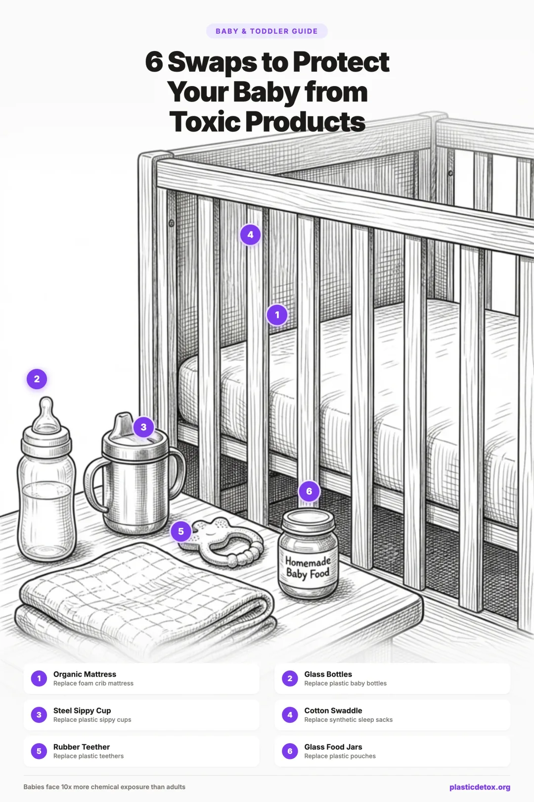

The Complete Parent's Guide to Replacing Toxic Baby and Toddler Products (2026)

Introduction: Why Babies Are More Vulnerable
Babies are not small adults. Their bodies process chemical exposures in fundamentally different ways, and the science on this is not subtle. A newborn's liver enzymes, the primary system for breaking down and eliminating foreign chemicals, are operating at a fraction of adult capacity. Some detoxification pathways do not fully mature until age two or later. This means chemicals that an adult body can neutralize and excrete in hours may circulate in an infant's system for days.
Their skin is thinner and more permeable. Substances that sit on the surface of adult skin penetrate more readily into a baby's bloodstream. Their surface area to body weight ratio is roughly three times higher than an adult's, which means topical exposures (lotions, detergent residue on clothing, chemicals in diapers) deliver a proportionally larger dose.
Then there is the floor. Babies crawl, roll, and play at ground level where household dust accumulates. That dust is not just dirt. Studies have found it contains flame retardants from furniture foam, microplastics from synthetic carpets and textiles, PFAS from stain resistant treatments, and phthalates from vinyl flooring. A crawling baby inhales and ingests this dust all day long, and their hand to mouth behavior ensures a steady dose.
Mouthing is the final multiplier. Babies explore the world with their mouths. Every toy, teether, book corner, shoe, and piece of furniture they mouth is a direct chemical ingestion pathway. This behavior is developmentally normal and impossible to prevent, which makes the materials surrounding your baby all the more important.
- Microplastics and nanoplastics: Physical particles shed from plastic products. Found in baby bottles, food pouches, toys, and synthetic clothing. Babies ingest an estimated 10 times more than adults.
- Flame retardants: Added to foam in mattresses, car seats, strollers, and nursing pillows. Migrate into dust and are inhaled or ingested. Linked to thyroid disruption and neurodevelopmental effects.
- PFAS (forever chemicals): Used in stain resistant and waterproof treatments on clothing, bibs, high chair covers, and stroller fabrics. Do not break down in the body or the environment.
- Endocrine disrupting chemicals (EDCs): Includes BPA, BPS, phthalates, and parabens. Found in plastics, personal care products, and fragranced items. Interfere with hormone signaling during critical developmental windows.
How to Prioritize Swaps
You do not need to replace everything at once. That is expensive, overwhelming, and unnecessary. Instead, prioritize by two factors: exposure time and exposure route.
Exposure time means how many hours per day your baby is in contact with the item. A crib mattress (14 to 16 hours) ranks higher than a stroller (1 to 2 hours). Exposure route means how the chemical enters the body. Ingestion (bottles, food containers, mouthed toys) and inhalation (mattress off gassing, dust) are more direct than skin contact (clothing). Items that combine long contact time with a direct exposure route are the highest priority swaps.
Certification Cheat Sheet
Not all certifications are created equal. Some are rigorous third party standards with ongoing testing. Others are industry self certifications that mean very little. Here are the ones worth looking for on baby products:
| Certification | What It Means | Best For |
|---|---|---|
| GREENGUARD Gold | Product tested for low chemical emissions including VOCs and formaldehyde. Stricter than standard GREENGUARD. Specifically developed for sensitive populations including children. | Mattresses, cribs, furniture, car seats |
| GOTS (Global Organic Textile Standard) | Entire supply chain certified organic, from raw fiber to finished product. Bans toxic dyes, formaldehyde finishes, and heavy metals. Requires fair labor practices. | Clothing, bedding, swaddles, towels |
| OEKO-TEX Standard 100 | Finished textile tested for over 350 harmful substances. Tests the actual product, not just the raw material. Class I is the strictest level, designed for baby products. | Clothing, bedding, any fabric product |
| MADE SAFE | Screened against a database of known toxic chemicals. No animal testing. Covers personal care, baby, cleaning, and household products. | Personal care, cleaning products, mattresses |
| EWG Verified | Meets Environmental Working Group's strictest health criteria. No chemicals of concern. Full ingredient transparency required. | Baby wash, lotion, sunscreen, wipes, diapers |
| FSC (Forest Stewardship Council) | Wood sourced from responsibly managed forests. Relevant because solid wood toys and furniture are safer alternatives to plastic and particleboard. | Wooden toys, furniture, cutting boards |
"BPA free" only means the specific chemical BPA was removed, often replaced with equally problematic alternatives like BPS and BPF. "Natural" and "eco friendly" have no regulated definitions and are frequently used as marketing terms. "Dermatologist tested" means a dermatologist looked at it, not that it passed any safety standard. Always look for the specific third party certifications listed above rather than vague marketing language.
Part 1: Feeding
1.0 The Pumping System
The pumping system is the most overlooked source of microplastic exposure for breastfed babies. Most conversations about baby feeding safety focus on bottles, but by the time milk reaches the bottle, it has already passed through plastic flanges, sat in plastic collection containers, and been stored in plastic bags. Each of those steps introduces contamination that is entirely avoidable.
1.0a Pump Flanges and Connector Parts
Standard pump flanges are made from polypropylene or polycarbonate plastic. Even without heat, the mechanical friction of pumping, the repetitive suction and release cycle, physically abrades the plastic surface and releases microplastic particles directly into the milk stream. This is not a theoretical concern. Mechanical wear is one of the primary documented mechanisms of microplastic release from plastic products.
The fix is simple: switch to silicone flanges. Silicone is not a plastic. It is a synthetic polymer made from silica (sand) and does not shed microplastic particles under mechanical stress.
Pumpin' Pal OptiFit Angled Flange Set
100% silicone angled flanges that allow a more natural seated position while pumping (you can lean back instead of hunching forward). The angled design eliminates the mechanical abrasion problem entirely and means less stress on the flange itself. Compatible with most major pump brands including Spectra and Medela. Available in multiple sizes.
- Angled design improves comfort and posture
- 100% silicone construction
- Reduces spillage when leaning back
- Sizing can be tricky; may need to try multiple sizes
- Not compatible with all pump models
1.0b Pump Collection Bottles
This is the exposure point nobody talks about. During a pumping session, warm breast milk sits in a plastic collection bottle for 15 to 30 minutes. Warm liquid in plastic is one of the most well documented scenarios for microplastic release. The 2020 Trinity College Dublin study showed that hot liquid in polypropylene releases up to 16 million particles per liter, and while breast milk is not boiling, it is warm and contains fat, both factors that increase leaching.
The solution is to collect directly into glass. Mason jars with pump adapters work with most major brands and cost almost nothing.
COMI Glass Breast Milk Collection and Storage Bottles
Glass collection bottles designed to connect directly to Spectra breast pumps. You pump straight into glass, eliminating the plastic collection bottle entirely. The bottles come with storage lids so you can pump, cap, and refrigerate or freeze in the same container. No adapters needed, no jury rigging Mason jars.
- Glass collection eliminates plastic contact entirely
- Purpose built for Spectra pumps, no adapters required
- Pump, store, and warm in the same bottle
- Comes with storage lids for fridge and freezer
- Glass is heavier than plastic during hands free pumping
- Designed for Spectra; check compatibility if using another pump brand
1.0c Breast Milk Storage Bags
Disposable plastic breast milk storage bags are a daily exposure for pumping moms. The bags are thin, the milk is often warm when transferred, and the mechanical action of squeezing, shaking, and temperature cycling (freezing and thawing) all accelerate microplastic release. Single use bags mean this exposure repeats with every fresh bag.
Mila's Keeper Silicone Storage Containers
Purpose built food grade silicone containers designed specifically for breast milk storage. Sized for standard milk portions and stackable for freezer organization. Silicone does not shed microplastics and handles temperature changes safely, going from freezer to warmer without any risk of shattering. The only breast milk storage container designed from the ground up to replace disposable plastic bags.
- Designed specifically for breast milk portions
- Food grade silicone, no microplastic shedding
- Stackable and space efficient
- Unbreakable, safe for freezer to warmer transitions
- Reusable, eliminating daily bag waste
- Higher upfront cost than disposable bags
- Takes more freezer space than flat frozen bags
- Silicone rather than glass (glass remains the gold standard for inertness)
1.0d Warming and Thawing
How you warm stored breast milk matters as much as how you store it. Never microwave breast milk in any container, plastic or otherwise. Microwaving creates hot spots that can burn the baby and also destroys beneficial antibodies. But also never warm a plastic storage bag by placing it in warm water. The combination of heat and the thin plastic of a storage bag maximizes microplastic release.
The safest approach: thaw in the refrigerator overnight, then transfer to a glass bottle and warm using a water bath or a bottle warmer that uses warm water (not steam). If using a bottle warmer, make sure the milk is already in glass or stainless steel before warming.
1.0e Mom's Own Daily Plastic Use
This one is easy to overlook, but what mom eats and drinks from directly affects the microplastic load in breast milk. A 2022 study published in Polymers detected microplastics in human breast milk for the first time. The particles found matched common food packaging plastics, polypropylene and polyethylene, suggesting that maternal dietary exposure passes through to breast milk.
Simple swaps for the nursing mom: replace your plastic water bottle with stainless steel, move food storage from plastic to glass, and if possible, filter your tap water. These changes benefit both mom and baby.
- Water bottle: Hydro Flask (stainless steel, insulated, no plastic contact with water)
- Food storage: Switch to glass containers for leftovers and meal prep (see our food storage guide)
- Water filter: Berkey gravity filter (stainless steel body, no plastic water contact) removes microplastics and PFAS (see our water filter guide)
1.1 Baby Bottles and Nipples
If there is one swap you make from this entire guide, make it this one. The 2020 Trinity College Dublin study published in Nature Food remains the definitive research on this topic. Polypropylene baby bottles, which make up 82% of the global market, release 1.3 to 16.2 million microplastic particles per liter when exposed to hot water at formula preparation temperatures. Shaking the bottle to mix formula increases release further. Sterilizing with boiling water causes the highest release of all.
Labeling a bottle "BPA free" does not help. The study tested specifically BPA free polypropylene bottles. The microplastic particles themselves are the problem, independent of any single chemical. And these are physical particles entering your baby's digestive system multiple times per day, every day, for the first year or more of life.
Watch for one less obvious risk: some glass baby bottles have painted logos or measurement markings on the outside. Some of these paints contain lead. Choose bottles with markings printed on the silicone sleeve or etched into the glass, never painted directly on the bottle surface where a baby's mouth might contact it.
Lifefactory Glass Baby Bottles
Borosilicate glass bottles with a medical grade silicone sleeve for drop protection. The glass is completely inert at any temperature. The silicone sleeve is color coded by size and provides enough grip and cushion that breakage is rare even with an older baby.
Price: $16 to $20 per bottle
- Borosilicate glass: zero microplastic release at any temperature
- Silicone sleeve protects against drops
- Wide and narrow neck options
- No painted markings (measurements on the sleeve)
- Heavier than plastic bottles
- More expensive than polypropylene options
Pura Kiki Stainless Steel Bottles
The only 100% plastic free baby bottle on the market. Made from #304 stainless steel with medical grade silicone nipples and a silicone sleeve. The genius of Pura Kiki is that the same bottle body grows with your child: swap the nipple for a sippy spout, then a straw, then a sport top. One bottle from newborn through school age.
Price: $17 to $22 per bottle
- 100% plastic free (stainless steel + silicone only)
- Unbreakable, perfect for older babies and toddlers
- Grows from bottle to sippy to straw to sport top
- Insulated option available
- Cannot see the milk level inside
- Stainless steel is heavier than glass for a newborn
A note about nipples: all baby bottle nipples are made from silicone or latex. There is no glass or metal alternative. Medical grade silicone is the best option. It is more heat stable than latex and does not release traditional microplastics. The contact surface between the nipple and the liquid is small compared to the bottle body, so the overall exposure from a silicone nipple on a glass or steel bottle is dramatically lower than from an all plastic bottle.
1.2 Baby Food Pouches
Baby food pouches are one of the most convenient inventions in modern parenting, and one of the worst for microplastic exposure. A 2023 University of Nebraska study found that microwaving food in plastic containers released up to 4.2 million microplastic and 2.1 billion nanoplastic particles per square centimeter. Even at room temperature, the multi layered plastic and aluminum construction of a pouch degrades over time, and the squeezing action physically releases particles.
The food inside a pouch has been sitting in direct contact with plastic for weeks or months from the moment it was packaged. This is not an exposure you can avoid by transferring the food to a glass bowl before feeding. The contamination happened in the supply chain, long before you opened the pouch. For occasional use, pouches are a reasonable convenience. For daily feeding, homemade food in glass is a meaningful upgrade.
Glass Baby Food Jars with Silicone Lids
Small glass jars with food grade silicone lids, no plastic anywhere. Make a batch of puree, portion into jars, and freeze. Silicone lids seal tightly without any plastic contact. Look for borosilicate glass options that handle freezer to microwave transitions safely. Several brands (WeeSprout, KeaBabies) make sets specifically sized for baby food portions.
Price: $15 to $20 for a set
- Zero plastic: glass jars with silicone lids
- Portion sized for baby meals
- Freezer, microwave, and dishwasher safe
- Reusable for years
- Not portable like a squeeze pouch
- Glass requires careful handling on the go
Haakaa Silicone Reusable Food Pouches
If your toddler loves the convenience of squeeze pouches, these are the clean alternative. Reusable food grade silicone pouches that you fill with homemade puree, smoothies, or yogurt. The wide opening makes filling and cleaning easy. Dishwasher safe and freezer safe. You get the portability of a pouch without the single use plastic and without the microplastic contamination from store bought pouch packaging.
Price: $16 to $22 for a multi pack
- Food grade silicone, no microplastic shedding
- Portable squeeze pouch format toddlers love
- Wide opening for easy filling and cleaning
- Dishwasher and freezer safe
- Reusable, replaces hundreds of disposable pouches
- Requires filling at home (no grab and go convenience of store bought)
- Silicone rather than glass (glass is more inert, but not squeezable)
1.3 Infant Formula Preparation
Microplastics have been detected in all tested infant formula samples regardless of brand or packaging format. A 2022 study in Nature Food confirmed what many parents feared: the contamination comes not just from the packaging but from the manufacturing process itself. Powdered formula passes through plastic tubing, plastic lined containers, and plastic scoops before it ever reaches your home.
You cannot eliminate the microplastics already in the formula powder. But you can prevent the dramatic escalation that happens when you pour boiling water into a polypropylene bottle. The Trinity College Dublin study showed that this single step, pouring 70°C water into a plastic bottle and shaking, is responsible for the largest spike in microplastic release. Prepare formula in a glass container, then transfer to the feeding bottle.
- Boil water and let it cool slightly (still at least 70°C per WHO guidelines to kill bacteria)
- Pour the hot water into a glass measuring container or Mason jar
- Add formula powder and mix with a stainless steel spoon (not the plastic scoop, use it only for measuring)
- Let the formula cool to feeding temperature
- Transfer to a glass or stainless steel bottle for feeding
This one change in prep order eliminates the biggest single source of microplastic ingestion for formula fed babies.
For the formula itself, European brands like Holle and HiPP use manufacturing processes with less plastic contact and more stringent ingredient standards than most US brands. They are harder to source domestically but increasingly available online.
1.4 Sippy Cups and Toddler Bottles
Plastic sippy cups face a triple threat: dishwasher heat, UV exposure from being left in cars or strollers, and the mechanical stress of being dropped and chewed on by toddlers. All three accelerate plastic degradation and microplastic release. And unlike baby bottles which parents typically retire within a year, sippy cups can be in daily use for two to three years.
Pura Kiki Stainless Steel (grows from bottle to sippy)
If you bought the Pura Kiki bottle during the infant stage, this is when it pays off. Swap the nipple for a silicone sippy spout, then later a straw top. Same stainless steel body, no new purchase needed. If you are starting fresh, the sippy spout version is available on its own.
Price: $5 to $8 for sippy spout accessory
Klean Kanteen Kid
12 ounce stainless steel bottle with a leak proof sippy cap. Double wall vacuum insulated option available. Built to survive being thrown from a high chair daily. Certified climate neutral.
Price: $20 to $28
- 18/8 stainless steel, no plastic food contact
- Vacuum insulated option keeps drinks cold for hours
- Extremely durable
- Multiple lid options (sippy, straw, sport)
- Heavier than plastic sippy cups
- Silicone spout can be chewed through by aggressive teethers
Elk and Friends Stainless Steel Cups
Stainless steel cups with silicone straws and a silicone splash guard lid that makes them spill resistant without a traditional sippy valve. The open cup design with a splash guard is actually recommended by pediatric dentists over traditional sippy spouts for oral development.
Price: $25 to $35 for a 2 pack
- Stainless steel with silicone straw (no plastic)
- Splash guard design supports oral development
- Beautiful colors (silicone sleeves)
- Dishwasher safe
- Not fully spill proof like a valved sippy cup
- Straws need replacing periodically
1.5 Plates, Bowls, and Utensils
Melamine is the material most parents should worry about here. Those colorful, lightweight, "unbreakable" toddler plates and bowls are almost always melamine, a nitrogen based plastic that releases formaldehyde and melamine chemicals when heated. A 2013 study in JAMA Internal Medicine found that eating hot soup from melamine bowls increased urinary melamine levels by 8.35 micrograms compared to ceramic bowls. Do not microwave food in melamine, and ideally, do not serve hot food on it at all.
Plastic toddler cutlery is less studied but follows the same principle: mechanical wear from cutting and chewing releases particles into food. A stainless steel spoon or a bamboo utensil with a food safe finish is a simple swap.
WeeSprout Silicone Plates and Bowls
Food grade silicone plates, bowls, and utensils designed for babies and toddlers. Suction bases keep them attached to the high chair tray. Microwave, dishwasher, and freezer safe. The divided plate design helps with portion control and picky eaters. No BPA, BPS, PVC, or lead.
Price: $10 to $20 per piece
- Food grade silicone, no microplastic release
- Suction base sticks to smooth surfaces
- Microwave, dishwasher, and freezer safe
- Affordable price point for silicone tableware
- Strong toddlers can defeat the suction
- Silicone can stain with tomato based foods
Avanchy Bamboo and Stainless Steel Sets
Combination of organic bamboo bowls with stainless steel utensils. The bowls have a suction base and the stainless steel spoons have silicone tips for gentle gums. Beautiful design that looks good enough for the whole family to use.
Price: $20 to $35 for bowl and spoon set
- Natural bamboo bowl with food safe finish
- Stainless steel spoons with soft silicone tips
- Suction base for stability
- Attractive, grows with the child
- Bamboo should not go in the dishwasher (hand wash)
- Higher price point than plastic alternatives
1.6 High Chairs
High chairs present two problems. First, most foam seat pads contain flame retardants. These chemicals migrate out of the foam into household dust and onto the surfaces your child touches and mouths. Second, plastic frames and trays are in a warm kitchen environment (near the stove, in direct sunlight through a window), which accelerates off gassing of BPA, phthalates, and other volatile compounds.
The ideal high chair is solid wood with a water based finish and either no foam pad at all or one with a clean certification.
Stokke Tripp Trapp
The gold standard. Solid European beech wood with a water based finish. GREENGUARD Gold certified for low chemical emissions. The design is adjustable enough to grow from a 6 month old baby through a full size adult chair, which means you buy it once and never replace it. No foam, no plastic tray (the accessory tray is sold separately and is BPA free). Used with a baby set for infants, then just the chair as they grow.
Price: $259 (chair only), $359 with baby set and tray
- Solid beech wood, water based finish
- GREENGUARD Gold certified
- Grows from baby to adult (seriously)
- No foam padding required
- Extremely sturdy and stable
- High upfront cost (offset by decades of use)
- No fold, takes up space permanently
- Cleaning requires getting into the track grooves
Mockingbird High Chair
FSC certified solid beechwood legs with FDA approved food grade silicone straps instead of nylon. The seat shell and tray are BPA free, non toxic plastic (not PVC), and the entire chair has been independently tested for lead, phthalates, mercury, and cadmium. No foam, no fabric, no flame retardants. Everything is included in the box: tray, harness, footrest. No add ons needed. At $249, it gets you off polypropylene as the dominant material and onto solid wood plus food safe silicone, at a price point well below the Stokke once you factor in the Stokke's required accessories.
Price: $249 (everything included)
- FSC certified solid beechwood legs
- Food grade silicone straps (not nylon)
- Tested for lead, phthalates, mercury, and cadmium
- Everything included, no add ons needed
- No foam, no fabric, no flame retardants
- Seat shell and tray are still plastic (BPA free, not PVC)
- Does not grow to adult chair like the Stokke
- Newer brand, less long term track record
For parents who want a premium option that transitions babies to the family table earlier, the Stokke Steps is worth a look. Like the Tripp Trapp, it is solid beech wood with a water based finish, but the Steps design includes a bouncer attachment for newborns, making it functional from day one. Same clean materials, different growth trajectory.
1.7 Nursing Pillows
Nursing and bottle feeding pillows are used for hours every day during the first year. Both the Boppy and My Brest Friend, the two most popular pillows on the market, have historically tested positive for flame retardant chemicals in their foam filling. The pillow is pressed against mom's body and baby's body simultaneously, in direct skin contact, often with a thinly clothed or bare chested baby. This is a significant exposure pathway that most guides overlook.
Holy Lamb Organics Nesting Pillow
Organic wool fill with an organic cotton cover. No foam of any kind, no flame retardant chemicals (wool is naturally flame resistant). Made by the same small Pacific Northwest company we recommend for crib mattresses. The wool fill is supportive without being rigid and conforms to your body over time.
Price: $95 to $120
- Organic wool and cotton only, no foam
- No flame retardant chemicals
- Naturally antimicrobial and temperature regulating
- Handmade in the USA
- Higher price than conventional nursing pillows
- Wool fill is not machine washable (spot clean, remove cover to wash)
Blessed Nest Organic Nursing Pillow
Organic buckwheat hull fill with an organic cotton cover. Buckwheat hulls are a natural, chemical free fill that molds to your body and provides firm support. No foam, no synthetic fill, no flame retardants. The hulls are breathable and do not trap heat. A favorite in the low tox parenting community.
Price: $80 to $100
- Organic buckwheat hull fill, completely natural
- No foam, no flame retardants, no synthetic materials
- Moldable and adjustable support
- Breathable, does not trap heat
- Heavier than foam pillows
- Buckwheat hulls make a rustling sound when adjusting
1.8 Bibs
Bibs are a daily feeding item that presses directly against your baby's chin, neck, and chest for every meal. Many standard bibs are made from PVC (the "crinkle" plastic backed bibs), which requires phthalate plasticizers and off gasses continuously. Fabric bibs marketed as "stain proof" or "waterproof" have been found to contain PFAS in the treatment. A baby wearing a PVC bib is pressing a phthalate delivery system against their skin multiple times a day.
Mushie Silicone Bibs
Food grade silicone with a deep catch pocket. No PVC, no BPA, no phthalates. Easy to wipe clean or rinse under the faucet. The soft, flexible silicone rolls up for travel. Available in beautiful muted colors that coordinate with their tableware.
Price: $12 to $16
Bumkins Silicone Bibs
Food grade silicone with a wide catch pocket and adjustable neck closure. BPA free, PVC free, phthalate free. Bumkins also makes a silicone first feeding set with matching bib, plate, and spoon. Dishwasher safe for thorough cleaning.
Price: $10 to $14
Fabric bibs that claim to be waterproof or stain resistant often achieve this through PFAS based treatments. PFAS are persistent chemicals that do not break down in the body. If you prefer fabric bibs over silicone, choose untreated organic cotton and accept that they will stain. A stained bib is safer than a chemically treated one.
Part 2: The Nursery
2.1 The Crib Mattress
If there is a single highest priority swap in your baby's entire world, this is it. Babies sleep 14 to 16 hours a day, face down, breathing air that is centimeters from the mattress surface. Every exhale warms the mattress, and every inhale draws in whatever the mattress is releasing.
Conventional crib mattresses are a cocktail of concerning materials. The foam core off gasses formaldehyde and VOCs that can take years to fully dissipate. Flame retardants are added to the foam to meet flammability standards, and these chemicals are not bound to the foam. They migrate to the surface, attach to dust particles, and are inhaled. The vinyl waterproof cover (standard on almost all conventional crib mattresses) off gasses phthalates and other plasticizers. Studies have measured elevated levels of VOCs and flame retardants in nursery air specifically attributable to the mattress.
A clean crib mattress uses organic cotton and wool (which is naturally flame resistant, eliminating the need for chemical flame retardants), natural latex, or a washable non toxic core. Look for GREENGUARD Gold certification (tested for low chemical emissions) and MADE SAFE certification (screened for known toxins).
Avocado Organic Crib Mattress
Our lead pick. Avocado has the strongest certification stack of any crib mattress on the market: GREENGUARD Gold, GOTS, MADE SAFE, and now EWG Verified, making it the first crib mattress to earn all four. Organic latex and wool core with an organic cotton cover. Avocado controls their supply chain from the latex plantation to the finished product. Natural latex is inherently antimicrobial and dust mite resistant. Wool is naturally flame resistant, eliminating the need for chemical flame retardants. No polyurethane foam, no synthetic latex, no vinyl.
Price: $279 to $349
- GREENGUARD Gold + GOTS + MADE SAFE + EWG Verified
- Strongest certification stack of any crib mattress
- Organic latex, wool, and cotton construction
- Naturally antimicrobial and hypoallergenic
- No flame retardant chemicals (wool is naturally FR)
- Dual firmness option available
- Latex allergy consideration (rare in infants but worth noting)
- Heavier than foam mattresses
Naturepedic Organic Crib Mattress
GREENGUARD Gold, MADE SAFE, and GOTS certified. Organic cotton and wool construction with no polyurethane foam and no flame retardant chemicals. The key distinction with Naturepedic is the waterproof layer: it uses food grade polyethylene (PE), the same inert material used in food packaging. This is not PVC. PVC requires phthalate plasticizers and off gasses continuously. Food grade PE is chemically stable, does not require plasticizers, and does not off gas. It is the safest waterproof barrier available for a crib mattress. If you need a truly wipeable, waterproof surface (and with babies, you probably do), Naturepedic solves this without compromising on materials.
Price: $259 to $399 depending on model
- GREENGUARD Gold + MADE SAFE + GOTS certified
- Food grade PE waterproof layer (not PVC, no phthalates)
- Organic cotton and wool construction
- Dual firmness (infant and toddler sides)
- Truly waterproof and wipeable
- PE waterproof layer is not organic (it is inert, but it is not cotton or wool)
- Premium price point
- Heavier than foam mattresses
Holy Lamb Organics Crib Mattress
For parents who want the simplest, purest materials with no certification theater. Holy Lamb is a small Pacific Northwest maker that uses just two things: organic wool and organic cotton. That is it. No latex, no foam, no polymer cores, no waterproof membranes, no glues. The wool batting is sourced from their own network of small American farms. Every mattress is handmade to order. This is the mattress for the parent who reads ingredient lists and wants to see two items, not twenty.
Price: $300 to $400
- Only two materials: organic wool and organic cotton
- Handmade in the USA, small batch
- No latex, no foam, no glues, no synthetic materials
- Wool is naturally flame resistant, antimicrobial, and temperature regulating
- American sourced wool from small farms
- No waterproof layer (use a separate organic wool puddle pad)
- Fewer certifications than Avocado or Naturepedic (the materials speak for themselves)
- Made to order, longer lead time
Organic cotton mattress protectors can block dust mites, bed bugs, and allergens, but they cannot block gases. Cotton, latex, and wool are gas permeable regardless of how tight the weave. VOCs, formaldehyde, and flame retardant fumes pass right through them. This fundamentally changes the calculus for anyone considering a protector as a substitute for a clean mattress.
What a non toxic protector plus organic sheet actually does:
- Blocks direct skin contact with the conventional mattress surface
- Prevents microplastics and chemical residues from migrating onto the sheet
- If the protector uses a food grade polyethylene or TPU membrane, it creates a partial physical barrier
- Reduces dust mite and allergen exposure
What it does NOT do:
- Block off gassing from VOCs, flame retardants, or formaldehyde coming up through the mattress
Your baby is still breathing those airborne chemicals for 14 to 16 hours a day regardless of what is layered on top. A protector and organic sheet are a good supplement to a clean mattress, not a replacement for one. If budget forces a choice, the mattress itself is the priority. A clean mattress with a basic cotton sheet beats a conventional mattress with the fanciest organic protector money can buy.
If you have a Stokke Sleepi, a family heirloom, a vintage frame, or a custom built crib, you can still make the sleep environment safe without replacing the crib itself. The mattress is the priority, not the frame. Naturepedic offers custom sizing for oval and non standard cribs (including the Sleepi's distinctive oval shape). Another excellent option is Heaven and Nature Organics, a small maker that builds custom size organic crib mattresses to your exact dimensions. Email them with your crib measurements and they will build one to fit. If custom ordering is not in the budget, use the best fitting standard organic mattress available for your frame, no more than two finger widths between mattress edge and crib rail.
2.2 Crib and Nursery Furniture
Pressed wood and MDF (medium density fiberboard) are held together with adhesives that contain formaldehyde. This is not a trace amount. Formaldehyde off gassing from new furniture is measurable with consumer air quality monitors and can take years to fully dissipate. In a small, often closed nursery room, concentrations can be significant.
Solid wood with a water based paint or finish is the only safe choice. Look for GREENGUARD Gold certification, which tests specifically for chemical emissions in the air a child breathes.
Babyletto Hudson Crib
GREENGUARD Gold certified. Solid New Zealand pine construction with a non toxic, water based finish. Mid century modern design that looks beautiful and converts to a toddler bed and daybed. One of the most popular clean cribs and widely available.
Price: $399 to $449
- GREENGUARD Gold certified for low emissions
- Solid wood with water based finish
- Converts to toddler bed and daybed
- Attractive design, multiple color options
- Pine is softer than beech or maple (may dent with heavy teething)
- Toddler rail sold separately
2.3 Crib Sheets and Bedding
Conventional cotton is one of the most heavily pesticide treated crops in the world. The pesticide residues survive processing and remain in the finished fabric. Polyester blends add microplastic fiber shedding with every wash cycle and every night of skin contact. In the sleep environment, where a baby spends the majority of their day, the fabric matters.
Burt's Bees Baby Organic Crib Sheets
GOTS certified 100% organic cotton. Widely available at Target, Amazon, and buybuyBABY. Soft, breathable, and affordable for organic certification. Multiple prints and solid colors. The most accessible entry point into organic crib bedding.
Price: $13 to $18 per sheet
- GOTS certified organic cotton
- Widely available and affordable
- Soft jersey knit that gets softer with washing
- Deep pocket fits most mattress heights
- Jersey knit may pill over time
- Limited to cotton (no waterproof layer)
2.4 Changing Pad and Cover
Most standard changing pads have a vinyl (PVC) waterproof surface. PVC requires phthalate plasticizers to be flexible, and these are not chemically bound to the material. They leach out continuously, especially in warm environments. Your baby lies directly on this surface, often with bare skin, multiple times a day.
Naturepedic Organic Changing Pad
Organic cotton with a food grade polyethylene waterproof layer (not PVC). No phthalates, no vinyl, no flame retardants. The same safe waterproofing technology as their crib mattress. Easy to wipe clean with a damp cloth. The contoured edges keep baby in place without any foam bolsters.
Price: $69 to $89
- Organic cotton with food grade waterproof layer
- No PVC, no phthalates, no flame retardants
- Easy to wipe clean
- Contoured edges for safety
- Premium price for a changing pad
- Slightly firmer than foam alternatives
Changing Pad Covers
The cover matters almost as much as the pad itself. Your baby's bare skin lies directly on this fabric during every diaper change. A conventional polyester or PVC backed cover cancels out the benefit of a clean pad underneath.
American Baby Company Organic Cotton Cover
GOTS certified organic cotton with a waterproof backing that is PVC free. A straightforward, affordable organic cover that fits standard contoured changing pads. The terry surface is soft against bare skin and machine washable. Buy at least two so you always have a clean one ready.
Price: $12 to $16
- GOTS certified organic cotton
- Waterproof without PVC
- Affordable, easy to stock multiples
- Fits standard contoured pads
- Limited color and pattern options
- Terry fabric can shrink if dried on high heat
Kyte Baby Changing Pad Cover
OEKO-TEX Standard 100 certified. Made from bamboo rayon jersey that is incredibly soft against sensitive diaper area skin. Beautiful colors that coordinate with their crib sheets and sleep sacks. The same bamboo rayon production nuance applies here (tested clean in the finished product, but the manufacturing process uses harsh chemicals).
Price: $22 to $28
- OEKO-TEX certified, tested for 350+ harmful substances
- Extremely soft jersey knit
- Beautiful color range
- Coordinates with other Kyte Baby nursery products
- Not organic (bamboo rayon processing uses chemicals)
- No waterproof backing (use over a waterproof pad)
- Higher price point
Part 3: Clothing and Textiles
3.1 Baby Clothes (Everyday)
Synthetic fabrics (polyester, nylon, acrylic) do two things against baby skin. First, they shed microplastic fibers continuously. These fibers are inhaled, ingested via hand to mouth contact with clothing, and absorbed through the skin. Second, new synthetic garments off gas VOCs from the chemical dyes, wrinkle resistant treatments, and antimicrobial finishes applied during manufacturing. That "new clothes smell" is volatile organic compounds.
Organic cotton is the straightforward alternative. If organic is not in the budget for every piece, prioritize organic for items that have the most skin contact: onesies, pajamas, and underlayers. Outerwear and play clothes are lower priority since they have less direct skin contact.
Colored Organics
GOTS certified organic cotton with beautiful muted colors from low impact, non toxic dyes. Their designs are more elevated than basic organics, making them great for gifts and photos. The fabric quality is noticeably soft and gets better with washing.
Price: $14 to $28 per piece
Primary
OEKO-TEX Standard 100 certified. Not organic, but tested for over 350 harmful substances in the finished garment. Their entire model is basics in every color, no logos, no slogans, no gender, just clean, simple pieces. Fast shipping and easy returns make them a practical everyday choice.
Price: $8 to $20 per piece
3.2 Swaddles and Sleep Sacks
The sleep environment deserves the cleanest fabrics you can manage. Your baby is wrapped or enveloped in a swaddle or sleep sack for every nap and all night long, skin in full body contact with the fabric, for 12 to 16 hours a day. Polyester sleep sacks shed microplastic fibers directly against skin. Bamboo rayon (marketed as silky and sustainable) is processed using carbon disulfide and sodium hydroxide, chemicals that can leave residues in the finished fabric.
Ergobaby Organic Swaddler
GOTS certified 100% organic cotton. Simple, effective swaddle design with adjustable closures. The organic cotton is breathable and helps regulate temperature better than synthetic alternatives.
Price: $24 to $30
Little Unicorn GOTS Swaddles
GOTS certified organic cotton muslin. Beautiful prints that are among the most popular in the organic baby space. Lightweight muslin is breathable and gets softer with every wash. Versatile enough to use as a swaddle, nursing cover, stroller blanket, or tummy time mat.
Price: $16 to $24
Finn + Emma Organic Swaddles and Sleep Sacks
GOTS certified organic cotton with distinctive, artistic prints. Finn + Emma uses only non toxic, low impact dyes and operates under fair trade practices. Their sleep sacks and swaddle blankets are some of the most recognized in the organic baby space. Strong brand commitment to full supply chain transparency.
Price: $20 to $38
3.3 Bath Towels and Washcloths
Bath time is a uniquely vulnerable exposure point. Warm water opens pores. Wet skin is more permeable. And the towel you wrap your baby in after the bath is pressed against every inch of their body. If that towel is made from synthetic fiber blends or treated with antimicrobial chemicals, those substances transfer more readily to warm, damp skin.
Bamboo rayon towels are heavily marketed as "natural" and "antibacterial," but the manufacturing process uses harsh chemicals (sodium hydroxide and carbon disulfide). Stick with organic cotton or look for OEKO-TEX certified options if organic is outside the budget.
Burt's Bees Baby Organic Hooded Towels
100% organic cotton with GOTS certification. Available at most major retailers. Soft, absorbent, and affordable enough to buy several. The knit terry is gentle on sensitive skin and gets softer with each wash.
Price: $14 to $18
Mushie Organic Cotton Washcloths
OEKO-TEX certified 100% organic cotton muslin. Sold in packs of three with muted, Scandinavian design colors. The muslin weave is lightweight and dries quickly, which means less time sitting damp in the bathroom growing mildew. Doubles as a burp cloth and face wipe between baths.
Price: $16 to $20 for a 3 pack
- OEKO-TEX certified organic cotton
- Muslin weave dries fast, resists mildew
- Versatile (washcloth, burp cloth, face wipe)
- Beautiful, giftable design
- Muslin is thinner than terry (less absorbent per cloth)
- Higher price per washcloth than conventional options
Natemia Organic Cotton Hooded Towels
100% organic Turkish cotton with a dense, plush weave that is noticeably softer and more absorbent than standard organic towels. The extra large size (40 by 30 inches) means it works well past the infant stage and into toddlerhood. The hood keeps baby warm during the transition from bath to pajamas.
Price: $20 to $28
- Organic Turkish cotton, ultra soft and plush
- Extra large size grows with the child
- Very absorbent, premium feel
- Hooded design keeps baby warm
- Higher price point than Burt's Bees
- Takes longer to dry due to dense weave
Part 4: Bath Time and Personal Care
4.1 Baby Shampoo and Body Wash
A study by the Environmental Working Group found that children are exposed to an average of 27 different unsafe chemicals daily through conventional personal care products. For babies, whose skin is thinner and more absorbent, the stakes are higher. The biggest offenders in baby care products:
- Fragrance: A single "fragrance" listing on a label can contain dozens of undisclosed chemicals, including phthalates and synthetic musks. Federal law does not require companies to disclose individual fragrance ingredients.
- Parabens: Preservatives that mimic estrogen in the body. Found in shampoos, lotions, and washes.
- PEG compounds: Petroleum based thickeners that can be contaminated with 1,4 dioxane, a probable carcinogen.
- Formaldehyde releasing preservatives: DMDM hydantoin, quaternium 15, imidazolidinyl urea. These slowly release formaldehyde to preserve the product. Common in Johnson's Baby Shampoo and similar legacy brands.
Pipette Baby Shampoo + Body Wash
EWG Verified. Plant derived squalane base instead of petroleum derived ingredients. No fragrance, no parabens, no sulfates, no silicones. Created by the scientist who developed the original Honest Company formulas, then left to make a cleaner version. Widely available at Target.
Price: $10 to $12
- EWG Verified (strictest health criteria)
- Plant derived squalane base
- Fragrance free, paraben free, sulfate free
- Available at Target, affordable
- Does not lather as much as conventional washes (lather is from sulfates, which you want to avoid)
- Plastic bottle packaging (transfer to glass pump if desired)
Earth Mama Organics Baby Wash
EWG Verified and GOTS certified organic. Castile soap base with organic calendula and chamomile. Originally developed for NICU use. The ingredient list is short enough to read in one breath, which is exactly what you want to see on a baby care product.
Price: $12 to $15
Babo Botanicals Baby Shampoo and Wash
EWG Verified with a fragrance free option. A more traditional creamy formula for families who do not love the castile soap feel. Plant based surfactants with oat milk and calendula. Available at Target, making it easy to grab on a regular shopping run. The consistency and lather feel more like a conventional baby wash while keeping the ingredient profile clean.
Price: $10 to $14
4.2 Diaper Cream and Skin Balms
Standard zinc oxide diaper creams use petroleum based carriers like mineral oil and petrolatum. Petroleum jelly (Vaseline) is a byproduct of oil refining. While pharmaceutical grade petrolatum is highly refined, lower grade versions found in many products can contain polycyclic aromatic hydrocarbons (PAHs), which are potential carcinogens. The diaper area is one of the most sensitive and absorbent areas of skin on a baby's body.
Earth Mama Organics Diaper Balm
EWG Verified. Organic herbs in an olive oil and beeswax base. Used in hospital NICUs, which is about the strongest safety endorsement a baby product can get. Short, readable ingredient list. Effective for both prevention and treatment of diaper rash without any petroleum based ingredients.
Price: $9 to $14
HealthyBaby Diaper Cream
EWG Verified. Uses plant derived squalane and zinc oxide instead of petroleum based carriers. The zinc oxide provides the barrier function, and the squalane (derived from sugarcane) keeps skin moisturized without any petroleum byproducts.
Price: $14 to $18
4.3 Baby Wipes
Most parents do not realize that conventional baby wipes are made from polypropylene, the same plastic as baby bottles. The wipe substrate itself is plastic. Add preservatives like phenoxyethanol and sodium benzoate, and you have a plastic sheet soaked in chemicals being rubbed against the most sensitive skin on your baby's body, dozens of times a day.
HealthyBaby Wipes
EWG Verified and MADE SAFE certified. The wipe substrate is wood pulp, not plastic. Only 6 ingredients, all EWG rated safe. The first wipe brand to achieve both EWG Verified and MADE SAFE certification simultaneously.
Price: $8 to $12 per pack
- Wood pulp substrate (not plastic)
- EWG Verified + MADE SAFE certified
- Only 6 clean ingredients
- Compostable
- Higher cost than conventional wipes
Natracare Organic Baby Wipes
Organic cotton substrate with organic essential oils. Fully compostable. No plastic of any kind in the wipe or the packaging. One of the original clean wipe brands, available internationally.
Price: $5 to $8 per pack
Coterie Wipes
Only 6 EWG Verified ingredients. Ultra thick and strong enough that you typically only need one wipe per change instead of three or four. The clean ingredient list is remarkably short for a product that works this well. No fragrance, no parabens, no phenoxyethanol.
Price: $8 to $12 per pack
- Only 6 ingredients, all EWG Verified
- Ultra thick, one wipe per change
- No fragrance, parabens, or phenoxyethanol
- Available on Amazon
- Premium pricing
- Thickness means fewer wipes per pack
WaterWipes
The most stripped down wipe on the market: 99.9% water and a drop of fruit extract. That is it. Two ingredients. Not MADE SAFE certified, but the ingredient profile is about as minimal as it gets. The most widely available "clean" option, stocked at virtually every pharmacy, grocery store, and big box retailer. For parents who want the simplest possible wipe without a specialty brand subscription.
Price: $5 to $8 per pack
4.4 Diapers
A baby goes through 6,000 to 10,000 diapers before potty training. Conventional disposable diapers contain superabsorbent polymer (SAP) gels, synthetic fragrance, chlorine bleached pulp, and a plastic topsheet (the layer that sits directly against skin). That plastic topsheet is in contact with the most sensitive area of a baby's body, in a warm, moist environment, for hours at a time. These are the exact conditions that accelerate chemical leaching from plastic.
HealthyBaby Diapers
The first EWG Verified diaper. This is not a marketing claim. It means every material and chemical in the product has been reviewed against EWG's strictest database of known health hazards. Plant based topsheet, chlorine free pulp, no fragrance, no lotions, no latex, no optical brighteners.
Price: ~$0.50 per diaper (subscription)
- First EWG Verified certified diaper brand
- MyMicrobiome certified (tested safe for skin microbiome)
- Plant based topsheet (not petroleum based plastic)
- No fragrance, chlorine, latex, or lotions
- Subscription delivery (never run out)
- Premium pricing
- Subscription only (no retail availability)
- Fewer size options than major brands
Dyper Bamboo Diapers
Bamboo viscose core with a plant based topsheet. Their unique REDYPER composting program lets you send back used diapers for industrial composting instead of landfill. No chlorine, no fragrance, no alcohol, no PVC, no TBT, no latex.
Price: ~$0.40 per diaper (subscription)
Coterie Diapers
Ultra clean ingredient list with plastic neutral certification. One of the softest diapers on the market with excellent absorbency and leak protection. No chlorine, no fragrance, no lotions, no latex, no parabens, no phthalates. Coterie publishes their full ingredient list, which is rare in the diaper industry. Available on Amazon and through their own subscription.
Price: ~$0.55 per diaper
- Ultra clean, fully disclosed ingredient list
- Excellent absorbency and leak protection
- Plastic neutral certified
- Available on Amazon (no subscription required)
- Most expensive diaper on this list
- Not compostable like Dyper
Andy Pandy Bamboo Diapers
OEKO-TEX certified bamboo based diapers widely available on Amazon. Bamboo fiber topsheet, chlorine free, no alcohol, no PVC, no TBT, no latex. A comparable alternative to Dyper at a similar price point with broader size availability and no subscription requirement.
Price: ~$0.35 to $0.45 per diaper
4.5 The Baby Bathtub
Most infant tubs are made from PVC or ABS plastic. In warm bath water, PVC leaches phthalates and other plasticizers. This is a direct exposure: your baby is sitting in warm water that is in contact with leaching plastic. The bath water then sits on their skin, in their ears, occasionally in their mouth.
Stokke Flexi Bath
Made from polypropylene (PP), which is a less concerning plastic than PVC because it does not require phthalate plasticizers. Certified BPA free, PVC free, and phthalate free. Foldable design saves space. Not a perfect material, but a significant improvement over standard PVC tubs.
Price: $45 to $55
The simplest alternative: use your kitchen sink with a clean organic cotton liner or towel on the bottom for cushion. No plastic at all, and most kitchen sinks are stainless steel or porcelain. This works well for the first several months before baby outgrows it.
Part 5: Gear and Transport
5.1 Car Seats
This is the hardest category. Federal crash safety requirements drive material choices, and foam padding, plastic shells, and fire resistant treatments are deeply embedded in car seat engineering. The good news is that a few manufacturers have proven that it is possible to meet every crash safety standard while eliminating the worst chemical offenders.
The primary concerns in car seats are flame retardants and PFAS. Flame retardants are added to foam padding to pass FMVSS 302 (the federal flammability standard for vehicle interiors). These chemicals are not bound to the foam and migrate into dust and onto fabric surfaces where they contact skin. PFAS are used in stain resistant and waterproof fabric treatments on the car seat cover. Neither chemical breaks down in the human body or the environment.
Nuna (full car seat lineup)
The only car seat brand that is entirely flame retardant free across its full lineup. Every Nuna car seat, infant through booster, is GREENGUARD Gold certified for low chemical emissions, contains no added flame retardants, and uses no PFAS in its fabric treatments. They achieve flammability compliance through inherently flame resistant wool blend fabrics rather than chemical additives.
Price: $350 to $650 depending on model
- 100% flame retardant free across entire lineup
- GREENGUARD Gold certified
- No PFAS fabric treatments
- Merino wool blend fabrics (inherently FR)
- Excellent crash test ratings
- Premium pricing
- Heavier than some competitors
- Wool fabrics require more careful cleaning
Clek Mammoth Ziip
Uses wool batting instead of synthetic foam padding. No added flame retardants. The Ziip version features a removable, washable seat cover. Clek's Mammoth fabric line specifically uses merino wool, which is naturally flame resistant and temperature regulating. One of the highest weight capacity seats on the market.
Price: $500 to $600
Nuna remains the only brand with an entire lineup that is 100% free of flame retardant chemicals. But the landscape has expanded meaningfully. There are now 11 car seat manufacturers offering seats with covers claimed to be free of chemical flame retardants. Notable options beyond Nuna and Clek:
- UPPAbaby Mesa V3: FR free fabric, GREENGUARD Gold certified. An excellent infant seat, especially if you are already in the UPPAbaby stroller ecosystem.
- Chicco ClearTex: A more affordable FR free option. Chicco's ClearTex line uses fabrics free of added flame retardant chemicals at a lower price point than Nuna or Clek.
- Britax and Maxi Cosi: Both have made commitments to innovative FR free textiles across portions of their lineup.
All car seats must meet the same federal crash safety standards regardless of brand, so choosing a cleaner fabric does not mean compromising on crash protection.
5.2 Strollers
Strollers have three chemical concerns. Plastic frame components off gas in direct sunlight and hot cars. PVC rain covers trap chemicals in an enclosed space right around your baby's breathing zone. And foam padding in seats and bumper bars often contains flame retardants that migrate into dust.
Bumbleride
The cleanest stroller brand available. Flame retardant free and PFAS free across their full lineup. GREENGUARD Gold certified. Their fabrics are made from recycled PET bottles (which, while still technically plastic, do not off gas the same way as new plastic). No added chemical treatments on any fabric surface.
Price: $449 to $899 depending on model
- Flame retardant and PFAS free
- GREENGUARD Gold certified
- Eco fabrics from recycled materials
- Excellent maneuverability and build quality
- Heavier than ultralight strollers
- Higher price point
- Fewer accessories than some competing ecosystems
Nuna Strollers
GREENGUARD Gold certified with no flame retardants and no PFAS since 2020. If you are already in the Nuna car seat ecosystem, their strollers pair directly with the car seat for a fully clean travel system. Excellent build quality and a smooth ride.
Price: $500 to $1,000 depending on model
5.3 Baby Carriers
Structured baby carriers with foam padding face the same flame retardant concerns as car seats. Foam padding in the carrier body requires chemical treatment to meet flammability standards. Additionally, plastic buckles degrade in heat and sunlight over time, and the carrier's fabric is pressed against baby's face and skin for extended periods.
Woven wraps and carriers made from certified organic cotton with metal (not plastic) buckles are the cleanest options.
Solly Baby Wrap
GOTS certified organic cotton. A single piece of fabric with no foam, no buckles, no plastic of any kind. The wrap style distributes weight evenly and keeps baby close to the body. Best for newborns through about 25 pounds.
Price: $65 to $75
Ergobaby Embrace
100% organic cotton with metal buckles. A structured carrier that is easier to put on than a wrap but still avoids foam padding and plastic hardware. The organic cotton jersey knit stretches for a snug, comfortable fit.
Price: $80 to $100
Part 6: Play
6.1 Teethers
This is the highest stakes toy category. Babies mouth teethers constantly, sometimes for hours at a stretch. Many parents sterilize teethers with boiling water or microwave steam bags, which is exactly the kind of heat exposure that maximizes microplastic release from plastic products. Even silicone, while far safer than plastic, can release siloxanes when repeatedly heated to high temperatures.
Natural rubber teethers eliminate the plastic and silicone concerns entirely. Natural rubber (from the Hevea tree) is a plant derived material that does not release microplastics or siloxanes.
Hevea Natural Rubber Teethers
100% natural rubber with no additives, no PVC, no BPA, no phthalates. Single piece construction means no seams where mold can hide (a common problem with two piece rubber toys). Multiple shapes and textures for different teething stages.
Price: $12 to $18
- 100% natural rubber, plant derived
- Single piece, no mold hiding spots
- Soft texture, gentle on sore gums
- No chemical additives of any kind
- Natural rubber has a mild scent when new
- Less durable than silicone (replace when worn)
- Cannot be boiled repeatedly (surface wash instead)
Sophie la Girafe
The most recognized natural rubber teether in the world, in production since 1961. 100% natural rubber with food grade paint. Sophie's shape and texture were designed to stimulate all five senses during teething. Over 60 years of safety track record. Many parents search for Sophie specifically, and for good reason: it is a proven, single material teether with no additives.
Price: $20 to $28
Mushie Silicone Teethers
Food grade silicone, widely available, and affordable. A good option when you need something durable that can survive being boiled. While not as pure as natural rubber, food grade silicone is a major improvement over plastic and is safe at room temperature and during normal use.
Price: $8 to $14
6.2 Plastic Toys
PVC toys are the worst offenders. PVC (polyvinyl chloride) requires phthalate plasticizers to be flexible, and those phthalates leach out when a baby mouths the toy. BPA labeled plastics (#7) are particularly problematic. But all plastic toys release microplastics with wear, chewing, and age. The surface degrades, the colors fade, and tiny particles end up in your baby's mouth.
Wooden toys with natural finishes are the safest alternative. Look for FSC certified wood (sustainably sourced) and finishes made from beeswax, plant oils, or water based lacquers. Avoid painted wooden toys unless the paint is explicitly certified non toxic and lead free.
PlanToys
FSC certified rubberwood with water based, non toxic dyes. PlanToys uses chemical free kiln dried rubberwood (reclaimed from trees that no longer produce latex). Their formaldehyde free E Zero glue is safer than standard wood adhesives. Wide range from infant rattles to toddler vehicles.
Price: $10 to $40 per toy
Grimm's Wooden Toys
European made from FSC certified alder and lime wood. Finished with natural beeswax and plant oil, no paint on most products. Their rainbow stacker and building blocks are open ended toys that grow with the child for years. The natural wood grain is visible and beautiful. Made in Germany under stringent EU toy safety standards.
Price: $20 to $70 per toy
HABA Wooden Toys
FSC certified beech wood from sustainably managed German forests. Water based lacquers with rigorous EU toy safety testing (EN 71). HABA has been making wooden toys since 1938 and their quality control is exceptional. Their baby clutching toys and threading games are excellent for fine motor development.
Price: $12 to $45 per toy
6.3 Play Mats and Foam Tiles
This is one of the worst offender categories in the baby product world. EVA foam interlocking tiles, the colorful puzzle piece floors found in nearly every playroom, contain formamide, a developmental toxin. Belgium and France have actually banned or restricted the sale of EVA foam floor tiles due to formamide content. PVC play mats contain phthalates. And because babies are face down on these mats, crawling, rolling, and mouthing the surface, the exposure is prolonged and direct.
Lovevery Play Mat
Organic cotton cover with a non toxic foam core. GREENGUARD Gold certified for low chemical emissions. Designed by child development experts with five developmental zones that grow with your baby from tummy time through toddlerhood. The cover is machine washable and zips off easily. No EVA, no PVC, no formamide.
Price: $140 to $160
- GREENGUARD Gold certified
- Organic cotton cover, machine washable
- Developmental zones designed by child experts
- Well cushioned for hard floors
- Higher price point
- Foam core (non toxic, but still foam rather than entirely natural materials)
- Large footprint, does not fold compactly
Toki Mats
GOTS certified organic cotton cover with a kapok fill (a natural, plant based fiber from the kapok tree). No foam, no PVC, no EVA, no synthetic fill of any kind. Kapok is naturally hypoallergenic, moisture resistant, and provides excellent cushioning for hard floors. Increasingly popular in the low tox parenting space and one of the cleanest play mat options available. Beautiful, minimal designs that work in any room.
Price: $149 to $199
Lorena Canals Washable Rugs
100% cotton rugs that are machine washable. Handmade with non toxic dyes. These double as a beautiful area rug and a safe play surface. When it gets dirty (and it will), throw the entire rug in the washing machine. No foam, no PVC, no synthetic fibers.
Price: $99 to $250 depending on size
Part 7: Home Environment
7.1 Cleaning Products
Babies live at floor level. They crawl on surfaces you clean with chemical products. They put their hands on the floor and then in their mouths. Residues from cleaning products are a constant low level exposure, and the aerosolized chemicals from spray bottles are inhaled directly.
Fragrance is the biggest concern in cleaning products. "Fragrance" on a label is a legal loophole that can contain dozens of undisclosed chemicals, including phthalates and volatile organic compounds. A 2022 study found quaternary ammonium compounds (quats), the active ingredient in disinfecting cleaners, in the breast milk of mothers who used disinfecting products regularly. Your baby does not need a sterile environment. They need a clean one.
For more detail on specific cleaning product swaps, see our dedicated guide to reducing microplastics in cleaning products.
Branch Basics
MADE SAFE certified fragrance free concentrate that replaces every cleaning product in your home: all purpose, bathroom, glass, floors, and laundry. One concentrate, different dilution ratios. No fragrance, no quats, no preservatives, no dyes. The simplest way to eliminate an entire category of chemical exposure.
Price: $59 for starter kit (concentrate + bottles, lasts months)
Dr. Bronner's Pure Castile Soap
USDA Organic certified. A single bottle of unscented castile soap diluted with water works as a hand soap, floor cleaner, dish soap, and all purpose spray. Five ingredients, all organic. The unscented "Baby Mild" version is specifically formulated for sensitive environments.
Price: $16 to $18 for a 32 oz bottle (dilutes to make gallons)
7.2 Laundry Detergent
Every piece of clothing, every crib sheet, every towel, and every blanket your baby touches has been washed in detergent. The residues left behind are in constant contact with skin. Synthetic fragrance in laundry detergent is one of the most pervasive chemical exposures in a baby's life because it coats every textile in the home.
Optical brighteners (the chemicals that make whites appear "whiter" under UV light) are synthetic compounds that remain on fabric and are skin sensitizers. They are non biodegradable and have no cleaning function whatsoever, they are purely cosmetic.
Molly's Suds
Five ingredients total. Founded by a mom and pediatric nurse after researching what goes into conventional detergent. No fragrance, no optical brighteners, no dyes, no sulfates. The fragrance free version is specifically recommended for baby laundry. Works in standard and HE machines.
Price: $15 to $20 (120 loads)
- Only 5 ingredients, all disclosed
- No fragrance, brighteners, or dyes
- Concentrated formula, excellent value per load
- Works in HE and standard machines
- May not remove heavy grease stains as aggressively as conventional detergent
- Powder format can leave residue if water temperature is too low
For more on choosing safe laundry products, including how to handle microplastic fiber shedding from synthetic clothes, see our guide on microplastics in clothing and laundry.
7.3 Air Quality and Dust
Household dust is not just dirt. In a modern home, dust is a concentrated mixture of microplastics from synthetic textiles, flame retardant chemicals from furniture foam, PFAS from stain resistant treatments, and phthalates from vinyl and plastic products. A 2023 study published in Environmental Science & Technology found that household dust contains an average of 39 flame retardant chemicals. Babies at floor level inhale and ingest this dust all day.
Two interventions make a measurable difference: HEPA vacuuming and HEPA air purification.
Blueair Air Purifier
Swedish engineered HEPASilent technology that combines mechanical and electrostatic filtration, capturing 99.97% of particles down to 0.1 microns while running quieter and using less energy than standard HEPA filters. Activated carbon layer removes VOCs, formaldehyde, and other gaseous chemicals. Multiple models available from nursery sized (Blue Pure 411) to whole room (Blue Pure 211+). Widely recommended by pediatricians and allergists.
Price: $120 to $300 depending on model
Placement matters: A purifier on the far side of the nursery does much less work than one placed 3 to 4 feet from the crib. Position it close enough to filter the air your baby is actually breathing, but not so close that it blows directly on them. For the play area, place it at floor level where your baby crawls.
- Vacuum with a HEPA filter at least twice a week, focusing on areas where baby plays and crawls
- Wet mop hard floors after vacuuming (dry sweeping just redistributes dust)
- Run a HEPA air purifier in the nursery and main play areas
- Remove shoes at the door to prevent bringing in outdoor pollutants, pesticides, and lead dust
- Wash hands frequently, especially after crawling and before eating
- Open windows for ventilation when outdoor air quality is good
For an in depth look at indoor air quality, including microplastics in bedroom air, see our articles on microplastics in indoor air and microplastics in bedroom air.
7.4 Water for Formula and First Foods
The water you use for formula, food prep, and baby's first sips matters. Tap water may contain microplastics, PFAS, lead, and other contaminants depending on your area. But the common alternative, bottled water in plastic, actually contains far more microplastics than tap. A 2018 study tested 259 bottled water brands from 11 countries and found an average of 325 microplastic particles per liter, roughly double the level found in tap water.
The solution is filtered tap water, not bottled. The right filter depends on your specific contaminant concerns. For a thorough breakdown of filter types and what each removes, see our detailed guide on how to remove microplastics from drinking water and our guide on filtering PFAS and microplastics.
Berkey Stainless Steel Gravity Filter
The gold standard for plastic free water filtration. The entire housing is stainless steel, so filtered water never contacts plastic at any point. Black Berkey purification elements remove microplastics, PFAS, lead, bacteria, and over 200 contaminants. No electricity, no plumbing, no plastic. The most widely used filter in the low tox community for good reason. The Big Berkey (2.25 gallon) is the most popular size for families.
Price: $280 to $350 (system + filters, filters last up to 6,000 gallons)
APEC Under Sink Reverse Osmosis System
The most thorough removal method available for home use. Reverse osmosis removes microplastics, PFAS, lead, arsenic, fluoride, and nearly all dissolved contaminants. Once installed, it delivers clean water directly from a dedicated faucet with no pitcher needed. This is the best long term solution for a household with a baby.
Price: $180 to $250 (installed once, filters replaced annually)
The Priority Order When You're Overwhelmed
If you have read this far and feel overwhelmed, that is completely normal. This guide covers every category for a reason, so that you have a reference to return to over time. You do not need to do it all at once. Here is the order that matters most:
Tier 1: Sleep (do this first). Replace the crib mattress with an organic or GREENGUARD Gold certified option. Switch to organic cotton crib sheets. Choose organic cotton or OEKO-TEX certified pajamas and sleep sacks. Your baby spends 14 to 16 hours a day in this environment. Cleaning it up delivers the single biggest reduction in daily chemical exposure.
Tier 2: Feeding (do this next). Switch from plastic bottles to glass or stainless steel. If pumping, replace plastic flanges and collection bottles. Move food storage from plastic to glass. Prepare formula in glass. These are the items your baby ingests from multiple times every day.
Tier 3: Skin (do this third). Replace baby wash, lotion, and diaper cream with EWG Verified options. Switch to cleaner diapers and wipes. This addresses the products applied directly to your baby's skin daily.
Everything else (car seat, stroller, toys, cleaning products, air quality) is a bonus. Swap these as items wear out, as budget allows, or as you have the energy. Every single swap makes a difference, and done is better than perfect.
A Note on Secondhand
Buying secondhand is one of the best things you can do for both your budget and the environment. For many baby products, used is perfectly fine:
- Safe to buy used: clothing (wash before use), strollers manufactured after 2015, high chairs, wooden toys, baby carriers, books
- Never buy used: crib mattresses (accumulated allergens, mold, degraded flame retardant chemicals), car seats (unknown crash history, expired materials, degraded foam), breast pumps (hygiene concerns, motor wear affecting suction and increasing part degradation)
For used strollers, check the manufacture date (typically on a sticker on the frame). Post 2015 models are more likely to meet current safety and chemical standards. Wipe down all surfaces and wash fabric components before first use.
FAQ
Start with the crib mattress (babies sleep 14 to 16 hours a day on it), then feeding items like bottles, pump parts, and food storage. Next prioritize daily skin contact products like diapers, wipes, and baby wash. Everything else is a bonus. Focus on the items with the longest contact time and the most direct exposure routes.
Not necessarily. BPA free often means the manufacturer replaced BPA with structurally similar chemicals like BPS or BPF, which have shown similar endocrine disrupting effects in studies. A 2020 study from Trinity College Dublin found that BPA free polypropylene baby bottles still released up to 16 million microplastic particles per liter. The safest approach is to avoid plastic entirely and use glass, stainless steel, or certified food grade silicone. For more on why BPA free is not enough, see our article on why BPA free is not safe.
The most meaningful certifications are GREENGUARD Gold (low chemical emissions, especially for furniture and mattresses), GOTS (organic textiles from field to finished product), OEKO-TEX Standard 100 (tested for harmful substances in fabrics), MADE SAFE (screened for known toxic chemicals), and EWG Verified (strict health criteria for personal care). Multiple certifications on a single product is the strongest signal of safety.
It depends on the product. Secondhand clothing, strollers manufactured after 2015, and high chairs are generally safe. Never buy secondhand crib mattresses (accumulated allergens, mold, degraded chemicals), car seats (unknown crash history, expired materials), or breast pumps (hygiene and motor degradation concerns).
No. Prioritize by exposure time and route. Sleep environment first (mattress, sheets, pajamas) since babies spend the most time there. Feeding second (bottles, pump parts, food storage). Skin contact third (personal care, diapers). Replace other items as they wear out or as budget allows. Every single swap makes a difference.
Nuna is the only car seat brand that is entirely flame retardant free across its full lineup, with GREENGUARD Gold certification and no PFAS. Clek uses wool batting instead of synthetic foam in their Mammoth line. All car seats must meet the same federal crash safety standards regardless of brand, so choosing a cleaner option does not mean compromising on crash protection.
Food grade silicone (especially platinum cured) is significantly safer than plastic. It does not release traditional microplastics and does not contain BPA, phthalates, or other endocrine disruptors. Some studies suggest silicone can release siloxanes when heated to high temperatures. For items contacting hot food or liquids, glass and stainless steel remain the gold standard. For room temperature use like plates, bibs, and teethers, food grade silicone is a good choice.
Look for FSC certified wood (sustainably sourced) with natural finishes like beeswax, plant oils, or water based lacquers. Avoid painted wooden toys unless the paint is explicitly certified non toxic and lead free (EN 71 European toy safety standard is the most rigorous). Solid wood is always safer than MDF or particle board, which contain formaldehyde based adhesives.
An organic sheet or protector will block direct skin contact with the mattress surface and prevent microplastic or chemical residues from migrating onto the bedding. That is genuinely helpful. But organic cotton, wool, and latex are all gas permeable regardless of how tight the weave. VOCs, formaldehyde, and flame retardant fumes pass right through fabric. Your baby will still be breathing those airborne chemicals for 14 to 16 hours a day. A protector is a good supplement to a clean mattress, not a substitute for one. If your budget only allows one upgrade, replace the mattress itself. A clean mattress with a basic cotton sheet is safer than a conventional mattress with the most expensive organic protector on top.
Microplastic content in infant and adult stool (Ragusa et al., Environmental Science & Technology Letters, 2021)
Microplastic and nanoplastic release from microwaving food containers (University of Nebraska, Environmental Science & Technology, 2023)
Microplastics in human breast milk (Ragusa et al., Polymers, 2022)
Melamine tableware and urinary melamine concentration (JAMA Internal Medicine, 2013)
Microplastic contamination in bottled water (Mason et al., Frontiers in Chemistry, 2018)
Flame retardant chemicals in household dust (Environmental Science & Technology, 2023)
Environmental Working Group (EWG) product safety database
Related Articles
- Microplastics in Baby Food: What Parents Need to Know
Where the contamination comes from, which products to avoid, and how to build the safest feeding setup. - Why BPA Free Is Not Safe
The science behind why BPA replacements like BPS and BPF may be just as harmful. - How to Remove Microplastics from Drinking Water
Which water filters actually remove microplastics and which ones fall short. - Best Plastic Free Food Storage Containers
Glass, stainless steel, and silicone containers compared for safety and durability. - How to Start Reducing Plastic Exposure
A practical priority guide for reducing plastic in your daily routine.